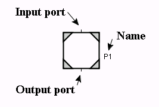

Edit
Same as Procedure Step.
Calls
Opens a list with all currently executing invocations from this process step. Select one to open that particular procedure call.


A process step is a version of a procedure step where the call to the procedure is started as a separate execution thread. The transition connected at the output port is enabled immediately when the procedure has been started. It is possible to have several executing procedure calls emanating from the same process step. When the execution within a procedure call reaches the exit step the procedure call is terminated without executing any actions of the exit step. Process steps have no exception output ports.
Edit
Same as Procedure Step.
Calls
Opens a list with all currently executing invocations from this process step. Select one to open that particular procedure call.